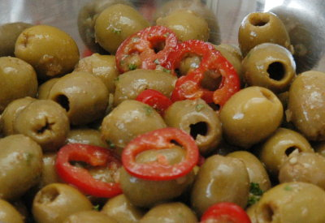

| Zutaten: | |
| 200 g | grüne Oliven |
| 3 El | Korianderblättchen |
| 3 El | glattblättrige Petersilie |
| 1 | Knoblauchzehe |
| 1 kleiner | roter Chili |
| 1/4 Tl | Kreuzkümmelpulver |
| 3 El | Olivenöl |
Koriander und Petersilie fein hacken, alle Zutaten mischen, in das saubere Glas füllen. Zugedeckt im Kühlschrank ca. 3 Tage marinieren.
Haltbarkeit: zugedeckt im Kühlschrank ca. 10 Tage.
Pro 100g: 32 g Fett, 2g Eiweiss, 3g Kohlenhydrate, 1298 kJ, 210 kcal
Betty Bossi Zeitung, 2005 Nr 7 Seite 11
Völlig einfach und Super! Wieso immer im Supermarkt die teuren Dinger kaufen wenn man sie ja selber so einfach machen kann? RE, 14.10.2006
@LINKBACK_TAG@ @WAKELOCK@